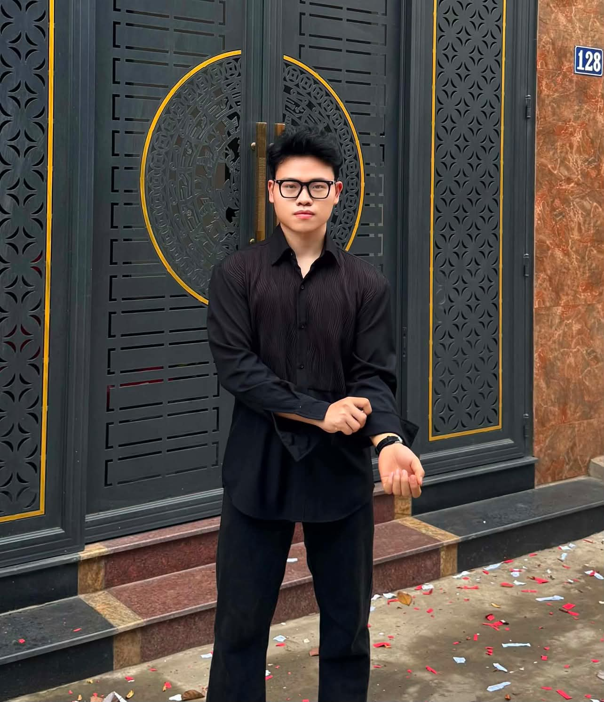

Tổng kết
Nhìn lại quá trình học tập
Portfolio tổng hợp kết quả học tập và thể hiện cách sinh viên kết nối kỹ năng số, AI và định hướng y tế, đặc biệt trong học tập và chẩn đoán hình ảnh.

Những gì đã học được
Qua 6 bài tập, sinh viên đã học được cách quản lý tài liệu số, tìm kiếm thông tin học thuật, viết prompt hiệu quả, hợp tác trực tuyến, sáng tạo nội dung với AI và sử dụng AI có trách nhiệm.
Kỹ năng đã cải thiện
Các kỹ năng được cải thiện gồm tổ chức dữ liệu, đánh giá nguồn tin, tư duy hệ thống, làm việc nhóm, trình bày nội dung và kiểm soát chất lượng đầu ra của AI.
Khó khăn gặp phải
Khó khăn chính là chọn lọc nguồn tin đáng tin cậy, viết prompt đủ rõ, xử lý lượng thông tin lớn và chuyển nội dung AI tạo ra thành sản phẩm phù hợp với yêu cầu học thuật.
Cách khắc phục
Sinh viên khắc phục bằng cách chia nhỏ nhiệm vụ, đối chiếu nhiều nguồn, chỉnh sửa lại nội dung đầu ra, sử dụng công cụ quản lý công việc và kiểm tra lại sản phẩm trước khi hoàn thiện.
Định hướng áp dụng trong tương lai
Các kỹ năng này có thể áp dụng vào học tập y khoa, nghiên cứu tài liệu, xây dựng bài thuyết trình, phân tích thông tin y tế và tiếp cận các công nghệ hỗ trợ chẩn đoán hình ảnh.
Liên hệ với lĩnh vực quan tâm
Với định hướng y tế, portfolio cho thấy công nghệ số và AI có thể trở thành công cụ hỗ trợ hiệu quả nếu được sử dụng đúng cách. Điều quan trọng là kết hợp năng lực công nghệ với tư duy chuyên môn, đạo đức học thuật và trách nhiệm trong xử lý thông tin.